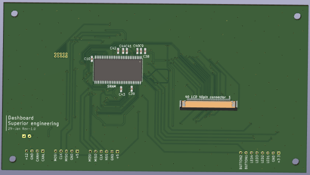
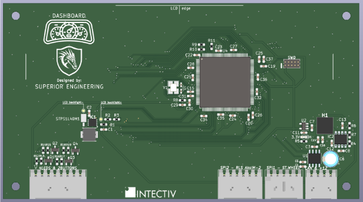

The main goal for the season 2022/23 was to abandon the use of the Adafruit LCD driver board used in last season. The driver board had some limitations - only 768KB display RAM and the text could only be upscaled 4x at best. The plan was to use the LTDC display controller in the STM32H7 microcontroller. Custom hardware solution had to be implemented.
I designed the PCB in KiCAD.
On the back side of the PCB is located external SDRAM (8MB -more than enough for storing 2 RGB888 screen buffers), and a 40pin FPC connector for the LCD.
On the front side of the PCB is also a power supply for the LCD backlight, other voltage regulators (12V->5V & 5V->3.3V), CAN transceiver, SWD connector and the STM32H734 microcontroller.
in progress